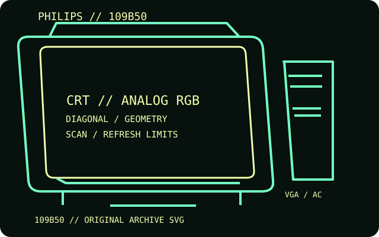

[ INDIVIDUAL COMPONENT // DISPLAYS ]
Philips Brilliance 109B50
A 19-inch Real Flat high-contrast shadow-mask CRT with LightFrame 3 and XSD reduced-depth cabinet design.

IDENTIFICATION: Match the complete model and regional suffix on the rear label. Published CRT timing limits do not guarantee a particular used unit's condition; verify the tested host, cable and displayed mode.
Specifications
| Catalog subcategory | CRT displays |
|---|---|
| Exact product / family | Philips Brilliance 109B50 |
| Tube diagonal & image geometry | 19-inch tube, 18.0-inch viewable image; 0.25 mm dot pitch (0.21 mm horizontal); flat 4:3 screen. The manual describes full-screen raster geometry and on-screen sizing/position controls. |
| Resolution & refresh | Maximum 1920 × 1440; flicker-free recommended mode up to 1280 × 1024 at 90 Hz. Horizontal autoscan range extends to 97 kHz; vertical frequency is mode-dependent within the manual's supported modes. |
| Video inputs | One analog RGB 15-pin D-sub (VGA) input. LightFrame is an image-processing feature, not another video connector. |
| Power | 90–264 V AC, 50/60 Hz universal supply; approximately 110 W typical operating consumption and below 3 W in standby/suspend. |
| Host compatibility | PC and Mac hosts with analog VGA output and a supported timing are compatible. Use an active converter for HDMI/DisplayPort-only sources, then confirm the resulting refresh and resolution. |
Identification and compatibility notes
The 109B50 is distinct from Philips 109P4; the names are similar but the feature set and timing data should not be conflated.
Record the rear-label model, regional voltage rating, video connector used, source timing, adapter chain, visible image area and geometry/convergence condition. CRTs contain hazardous high-voltage circuits and heavy components; internal service belongs to qualified technicians.
Manufacturer documentation and sources
- Philips — 109B50 technical specificationsProduct specification page for image size, scan bandwidth and modes.
- Philips — 109B50 user manualUser manual covering setup, input and operation.